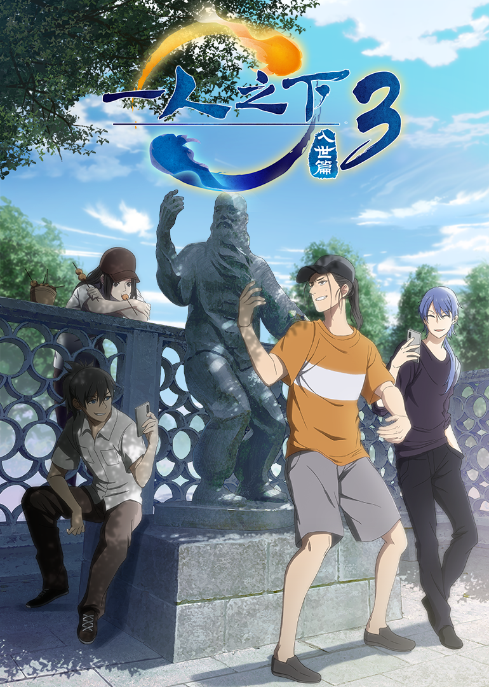

Subs Overlay for Guodong Subs
This project is maintained by wuzimiko
Hosted on GitHub Pages — Theme by orderedlist
Synopsis
After the World Sacrificial Rites, Wang Ye was expelled from the Wudang Sect and returned home. He was still pursued by coveting eyes, though, for he had mastered one of the Eight Incredible Arts —— Fenghou Qimen. Things soon got out of hand when they began to spy on his family. Wang Ye had no choice but to heed the suggestion of his friend, Zhuge Qing: to seek help from the company “Nadoutong”. Zhang Chulan and Feng Baobao were summoned to solve the case. How will Zhang Chulan use his abilities to help Wang Ye find the mastermind pulling strings from behind? What impressive performances will Zhuge Qing, Wang Ye and the others show us? Who are the people hankering after the Eight Incredible Arts? The answers are in “The Outcast —— Into the World Arc”!
